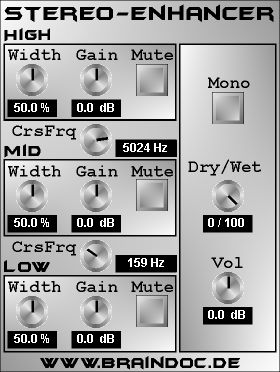

|  |
What is Stereo-Enhancer?:
Stereo-Enhancer is a VST-plugIn for the PC-platform for the modification of the stereo-width of a signal. The adjustment can be made for low, mid and high frequencies seperately. The separation of the frequency-bands is achieved by means of linear-phase FIR-filters. This is, because the sum of the three filtered (not yet modified) signals should sum up exactly to the original signal. From the use of FIR-technology results a quite high CPU-usage, because convolutions have to be implemented - sorry for that. The adjustment of the stereo image itself is based on amplifying/attenuating the difference of the respective channel with the mono-sum. This also implies, that the plugIn can't be used to create pseudo-stereo signals from mono-signals, as this difference is exactly zero in this case. It's just a Stereo-Enhancer, not a Stereo-Creator.
general Parameters:
On the right side of the plugin window you find the general parameters, these are:
Parameters for the different frequency-bands:
As already mentioned, prior to the actual stereo-width regulation the signal is splitted into three frequency bands. The crossover frequencies are controlled via the CrsFrq-Knobs. For each frequency band, there are the following parameters:
Have much fun in making music, Braindoc.